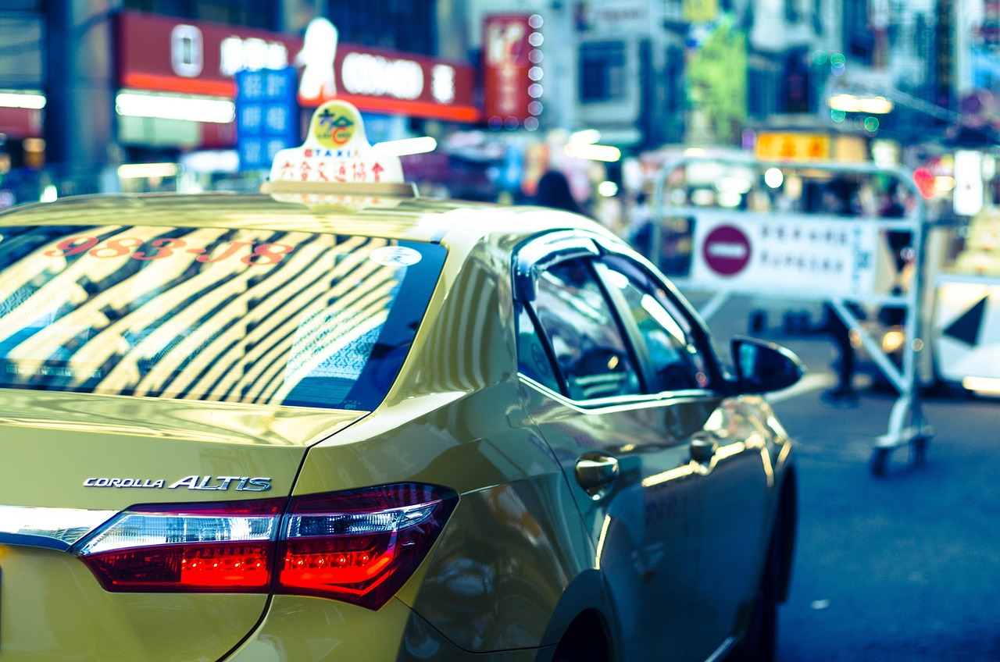
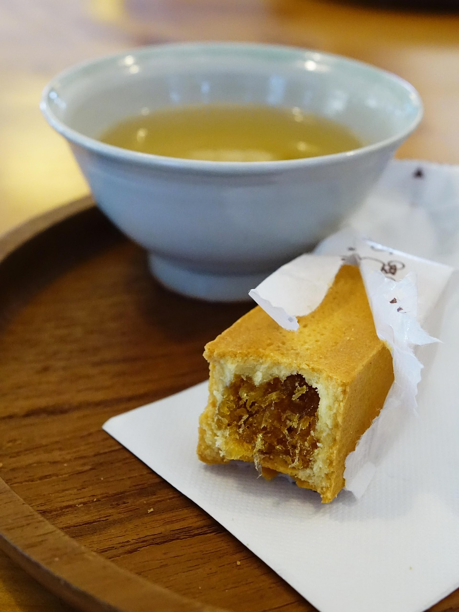
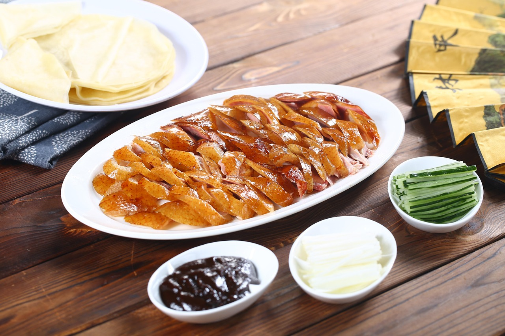
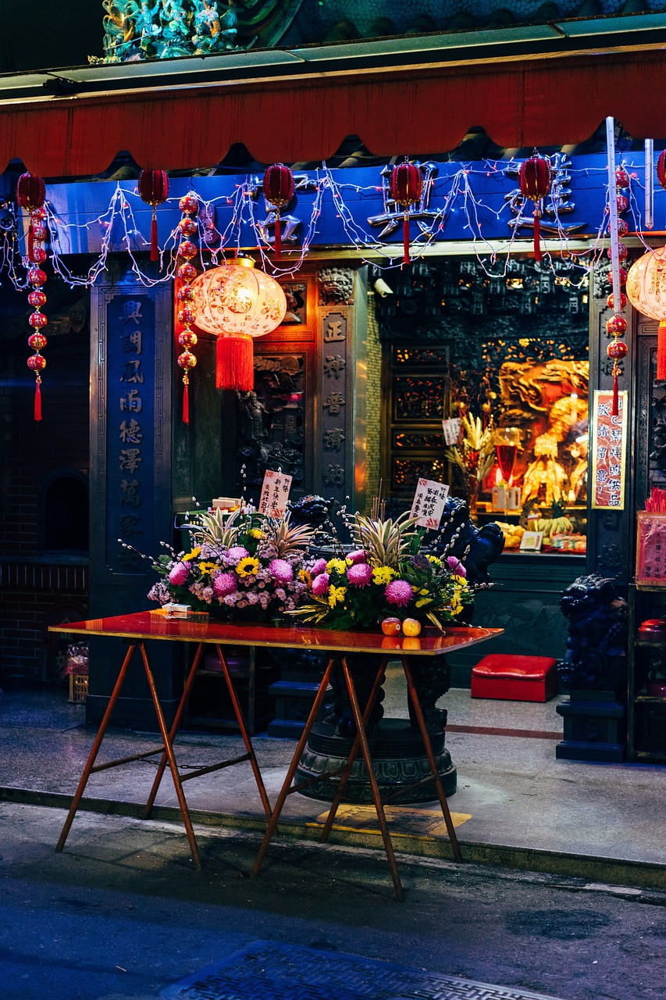
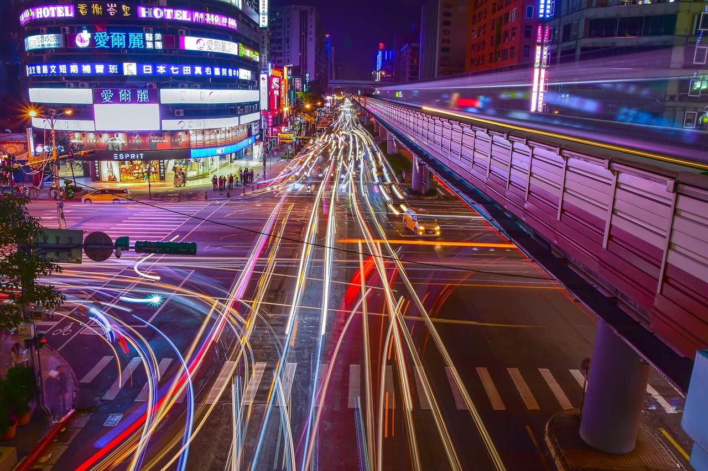

블로그
교통, 선물, 맛집까지 — 대만 여행 전반에 도움되는 정보를 실제 여행자들의 경험을 바탕으로 정리해요.

타이베이·타이중·가오슝, 엄마와 가는 첫 대만 여행 어디가 편할까
이동 난이도, 관광 밀도, 부모님 동선까지 — 세 도시를 비교해서 첫 대만 여행지를 골라봤습니다.

타이베이 첫 여행 3박4일, 이지카드만으로 충분할까?
이지카드, 신용카드 컨택리스 결제, 버스, 택시(우버)까지 — 첫 타이베이 여행자를 위한 교통수단 총정리.

대만 여행 선물 추천 — 뻔한 간식 말고 뭘 사올까?
펑리수·누가크래커는 다들 사 오는 국룰이죠. 그래도 새로운 선물을 찾는다면, 브랜드별 비교와 가성비 팁까지 정리했어요.
타이베이 마지막 날, 숙박 없이 새벽 비행기 타도 될까?
마지막 날 밤 숙소를 잡지 않고 새벽 비행기를 타는 '무박' 일정. 실제 여행자들의 경험을 바탕으로 장단점과 시간 활용법을 정리했어요.
대만 간식·술, 기내 반입 될까 위탁수하물로 부쳐야 할까
젤리·푸딩 같은 말랑한 간식부터 고량주까지 — 액체·젤류 반입 기준과 주류 면세 한도를 한 번에 정리했어요.

베이징덕 맛집 샹덕(享鴨) 먹고 어디 갈까 — 중샤오둔화 반나절 코스
예약 필수인 베이징덕 맛집 샹덕에서 식사하고, 도보·MRT로 가볍게 돌아볼 수 있는 주변 반나절 코스를 짜봤어요.

지우펀, 금요일 vs 일요일 언제 덜 붐빌까
초등학생 자녀와 함께라면 특히 중요한 혼잡도 문제. 요일별·시간대별 체감 혼잡도와 방문 타이밍 팁을 정리했어요.

용산사는 낮보다 밤? 야경 시간대와 주변 코스 짜는 법
붐비는 낮 시간을 피해 야경으로 즐기는 용산사. 방문 시간대별 분위기 차이와 완화 야시장 연계 코스를 정리했어요.
타이베이 마지막 날 오후 비행기, 공항 가기 전 어디까지 다녀올까
16:55 같은 오후 비행기라면 마지막 날 반나절이 통째로 남습니다. 짐 보관부터 공항 이동 시간까지 역산해서 짜는 반나절 코스.

타이베이 숙소 위치 비교 — 시먼 vs 메인역 vs 중산, 어디가 편할까
쇼핑·야시장이 좋으면 시먼, 공항 이동이 우선이면 메인역, 조용한 카페 감성을 원하면 중산. 세 지역을 기준별로 비교했어요.